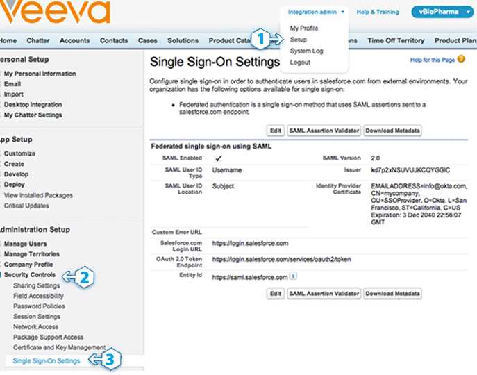

Log in to Veeva with the same administrator username and password-token used for User Management settings.
Click on Setup
Click Security Controls to open the sub-menu

Click Single Sign-On Settings
Click the Edit button to display a form similar to the page shown on the right →
Check SAML Enabled and a form will display
Set the SAML Version to 2.0
Download your Okta Identity Provider Certificate so you can upload it in the Identity Provider Certificate field
Sign in to the Okta Admin app to have this variable generated for youCopy and paste the following key into Issuer:
Sign into the Okta Admin dashboard to generate this value.(Optional) Copy and paste the following URL into Identity Provider Login URL:
Sign into the Okta Admin dashboard to generate this value.This URL will authenticate your users when they attempt to log in directly to Veeva or click on a deep link in Veeva and are not currently authenticated.
(Optional) Copy and paste the following URL into Identity Provider Logout URL:
Sign into the Okta Admin dashboard to generate this value.This URL sends your users to their Okta home page when they log out of Veeva.
Set the SAML User ID Type to Assertion contains User's Veeva username
Set the SAML User ID Location to User ID is in the NameIdentifier element of the Subject statement
Please note: Delegated authentication is an optional integration that can be used in addition to SAML 2.0.
Delegated authentication enables various integrations with Veeva — like the Microsoft Outlook plugin — as well as giving you the ability to lock a user out of Veeva. Unlike SAML 2.0 single sign-on, delegated authentication is turned on at the user profile level. You have the ability to enable delegated authentication for a single user or large group; it all depends on who has the user profile where the Is Single Sign-On Enabled permission is enabled.
You can't see this form until Veeva has enabled delegated authentication for your organization. Once enabled, the delegated authentication form is located on theSingle Sign-On Settings page in Veeva — the same place where you configure SAML 2.0.
Contact your Veeva Systems Account representative and ask them to enable delegated authentication for your organization. You can also do this by opening a case in the Veeva systems customer service application
Once Veeva systems enables delegated authentication you can proceed with the steps below.
Go to the Single Sign-On Settings page located in the Setup > Security Controls section of Veeva. Click the Edit button to display a form similar to the page shown on the right →
Copy and paste the URL below into the Delegated Gateway URL field:
Sign in to the Okta Admin app to have this variable generated for youClick Save

We recommend creating a test user profile so you can experiment with this feature on a single user. If you feel comfortable with this feature then you can skip to the next section.
Go to the Profiles page located in the Setup > Manage Users section of Veeva
Open a User Profile you would like to experiment with
Click the Clone button to make a copy of this profile. Using a cloned profile allows you to avoid impacting any other users who have the original profile.
Give the cloned profile a name
Click Save
IMPORTANT: Enabling single sign-on for a user profile will affect every user who is assigned that user profile. If you want to experiment with a single user first, we reccomend creating a cloned profile (see above) to test with.
Go to the Profiles page located in the Setup > Manage Users section of Veeva
Click Edit on the user profile and scroll down to the General User Permissions section
Check the Is Single Sign-On Enabled checkbox
Click Save
IMPORTANT: Do not enable delegated authentication for the Veeva user used by Okta to connect to the Veeva User Management APIs. The API user is specified in the User Management settings page within Okta.
Go to the Users page located in the Setup > Manage Users section of Veeva
Click Edit for a user you want to enable single sign-on for
Select a Profile that has delegated authentication single sign-on enabled (use the cloned profile if you are experimenting)
Click Save
In Okta, go to the People list and click a person's name to open their profile
Click Assign Application
Select Veeva from the list and enter a Veeva username that has delegated authentication enabled
Click Save
CLICK HERE to go to the Veeva login page
Enter the Veeva username you used in the previous section
Enter the Okta password for the Okta user assigned the Veeva username above
Click Login
Assuming you logged in successfully, you can use these credentials for Veeva client application integrations like the Microsoft Outlook plugin and other APIs.
Your users are ready to single sign-on to Veeva!
You can assign Veeva access to users from their user profile within Okta.